Use Venn diagrams and set notation to illustrate the intersection, union and complements of sets
Illustrate disjoint sets, subsets and overlapping sets with diagrams
Use Venn diagrams and problem-solving strategies to solve logic problems
Figure1.2.1.Alternative Video Lesson
Subsection1.2.1Sets
It is natural for us to classify items into groups, or sets, and consider how they interact with each other. In this section, we will use sets and Venn diagrams to visualize relationships between groups and represent survey data.
A set is a collection of items or things. Each item in a set is called a member or an element.
Example1.2.2.
The numbers 2 and 42 are elements of the set of all even numbers.
MTH 105 is a member of the set of all courses you are taking.
A set consisting entirely of elements of another set is called a subset. For instance, the set of numbers 2, 6, and 10 is a subset of the set of all even numbers.
Some sets, like the set of even numbers, can be defined by simply describing their contents. We can also define a set by listing its elements using set notation.
Subsection1.2.2Set Notation
Set notation is used to define the contents of a set. Sets are usually named using a capital letter, and its elements are listed once inside a set of curly brackets.
For example, to write the set of primary colors using set notation, we could name the set C for colors, and list the names of the primary colors in brackets: C = {red, yellow, blue}. In this case, the set C is a subset of all colors. If we wanted to write the list of our favorite foods using set notation, we could write F = {cheese, raspberries, wine}. And yes, wine is definitely an element of some food group!
Example1.2.3.
Julia, Keenan, Jae and Colin took a test. They got the following scores: 70, 95, 85 and 70. Let P be the set of test takers and S be the set of test scores. List the elements of each set using set notation.
Solution.
In this example, the set of people taking the test is P = {Julia, Keenan, Jae, Colin}, and the set of test scores is S = {70, 85, 95}. Notice in this example that even though two people scored a 70 on the test, the score of 70 is only listed once.
It is important to note that when we write the elements of a set in set notation, there is no order implied. For example, the set {1, 2, 3} is equivalent to the set {3, 1, 2}. It is conventional, however, to list the elements in order if there is one.
Subsection1.2.3Universal Set
The universal set is the set containing every possible element of the described context. Every set is therefore a subset of the universal set. The universal set is often illustrated by a rectangle labeled with a capital letter U. Subsets of the universal set are usually illustrated with circles for simplicity, but other shapes can be used.
Example1.2.4.
If you are searching for books for a research project, the universal set might be all the books in the library, and the books in the library that are relevant to your research project would be a subset of the universal set.
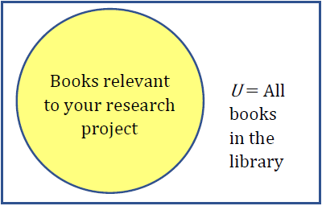
If you are wanting to create a group of your Facebook friends that are coworkers, the universal set would be all your Facebook friends and the group of coworkers would be a subset of the universal set.
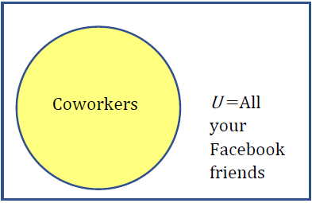
If you are working with sets of numbers, the universal set might be all whole numbers, and all prime numbers would be a subset of the universal set.
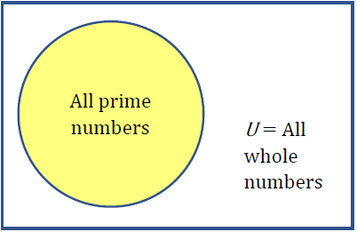
Subsection1.2.4The Null Set
It is possible to have a set with nothing in it. This set called the null set or empty set. It’s like going to the grocery store to buy your favorite foods and realizing you left your wallet at home. You walk away with an empty bag. The set of items that you bought at the grocery store would written in set notation as G = { }, or G = Ø.
Subsection1.2.5Intersection, Union, and Complement (And, Or, Not)
Suppose you and your roommate decide to have a house party, and you each invite your circle, or set, of friends. When you combine your two sets of friends, you discover that you have some friends in common.
The set of friends that you have in common is called the intersection. The intersection of two sets contains only the elements that are in both sets. To be in the intersection of set A and B, an element needs to be in both set A and set B.
The set of all friends that you and your roommate have invited is called the union. The union of two sets contains all the elements contained in either set (or both). To be in the union of set A and set B, an element must to be contained in just set A, just set B, or in the intersection of sets A and B. Notice that in this case that the “or” is inclusive.
What about the people who were not invited to the party and showed up anyway? They are not elements of your set of invited friends. Nor are they an element of your roommate’s set of invited friends. These uninvited party crashers are the complement to your set of invited friends. The complement of a set A contains everything that is not in the set A. To be in the complement of set A, an element cannot be in set A, but it will be an element of the universal set.
Example1.2.5.
Consider the sets: A = {red, green, blue}, B = {red, yellow, orange}, and C = {red, orange, yellow, green, blue, purple}
Determine the set A intersect B, and write it in set notation.
Determine the set A union B, and write it in set notation.
Determine the intersection of A complement and C and write it in set notation.
Solution.
The intersection contains the elements in both sets: A intersect B = {red}
The union contains all the elements in either set: A union B = {red, green, blue, yellow, orange}. Notice we only list red once.
Here we are looking for all the elements that are not in set A and are in set C: A complement intersect C = {orange, yellow, purple}
Subsection1.2.6Venn Diagrams
Venn diagrams are used to illustrate the relationships between two or more sets. To create a Venn diagram, start by drawing a rectangle to represent the universal set. Next draw and label overlapping circles to represent each of your sets. Most often there will be two or three sets illustrated in a Venn diagram. Finally, if you are given elements, fill in each region with its corresponding elements. Venn diagrams are also a great way to illustrate intersections, unions and complements of sets as shown below.
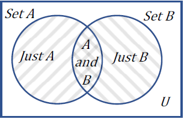Figure1.2.6.The intersection is where the shading of the two sets overlaps in the center. It contains the elements of A and B.
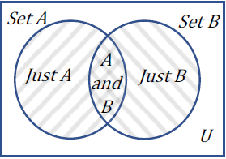Figure1.2.7.The union includes all elements of A or B or both. It contains all three of the shaded regions.
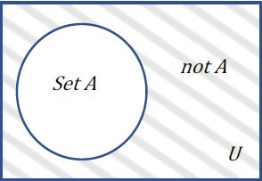Figure1.2.8.The complement of set A includes all the elements not in A. It is the shaded region outside the set of A, but within the universal set.
Here is an example of how to draw a Venn Diagram.
Example1.2.9.
Let J be the set of books Julio read this summer and let R be the set of books Rose read this summer. Draw a Venn diagram to show the sets of books they read if Julio read Game of Thrones, Animal Farm and 1984, and Rose read The Hobbit, 1984, The Tipping Point, and Greek Love.
To create a Venn diagram showing the relationship between the set of books Julio read and the set of books Rose read, first draw a rectangle to illustrate the universal set of all books.
Next draw two overlapping circles, one for the set of books Julio read and one for the set of books Rose read. Since both Rose and Julio read 1984, we place it in the overlapping region (the intersection).
All the books that Rose read will lie in her circle, in one of the two regions that make up her set. Likewise for the books Julio read. Since we have already filled in the overlapping region, we put the books that only Rose read in her circle’s “cresent moon” section, and we put the books that only Julio read in his circle’s “cresent moon” section. The resulting diagram is shown below.
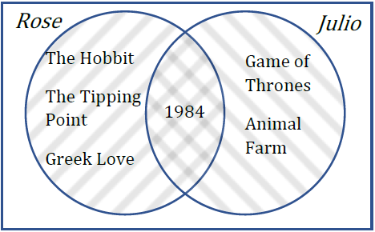
Example1.2.10.
In the last section we discussed the difference between inclusive “or” and exclusive “or.” In common language, “or” is usually exclusive, meaning the set A or B includes just A or just B but not both. In logic, however, “or” is inclusive, so the set A or B includes just A, just B, or both. The difference between the inclusive and exclusive “or” can be illustrated in a Venn, as shown below.
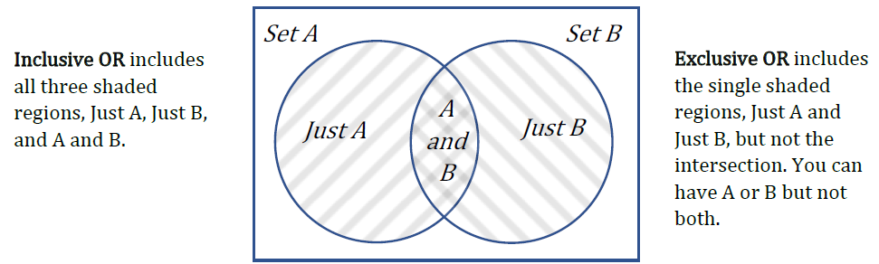
Subsection1.2.7Illustrating Data
We can also use Venn diagrams to illustrate quantities, data, or frequencies.
Example1.2.11.
A survey asks 200 people, “What beverage(s) do you drink in the morning?” and offers three choices: tea only, coffee only, and both coffee and tea. Thirty report drinking only tea in the morning, 80 report drinking only coffee in the morning, and 40 report drinking both. How many people drink tea in the morning? How many people drink neither tea nor coffee?
Solution.
To answer this question, let’s first create a Venn diagram representing the survey results. Placing the given values, we have the following:
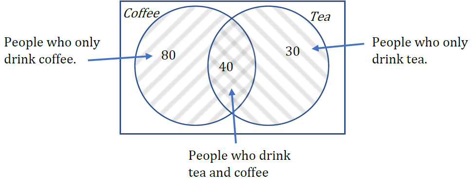
The universal set should include all 200 people surveyed, but we only have 150 placed so far. The difference between what we have placed so far, and the 200 total is the number of people who drink neither coffee nor tea. These 200 – 150 = 50 people are placed outside of the circles but within the rectangle since they are still included in the universal set.
The number of people who drink tea in the morning includes everyone in the tea circle. This includes those who only drink tea and those who drink both tea and coffee. Thus, the number of people who drink tea is 40 + 30 = 70.
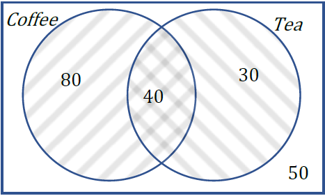
Here is an example of a Venn diagram with three sets.
Example1.2.12.
In a survey, adults were asked how they travel to work. Below is the recorded data on how many people took the bus, biked, and/or drove to work. Draw and label a Venn diagram using the information in the table.
Travel Options
Frequency
Just Car
157
Just Bike
20
Just Bus
35
Car and Bike only
35
Car and Bus only
10
Bus and Bike only
8
Car, Bus and Bike
12
Neither Car, Bus nor Bike
15
Total
292
Solution.
To fill in the Venn diagram, we will place the 157 people who only drive a car in the car set where it does not overlap with any other modes of transportation. We can fill in the numbers 20 and 35 in a similar way.
Then we have the overlap of two modes of transportation only. There are 35 people who use their car and bike only, so they go in the overlap of those two sets, but they do not take the bus, so they are outside of the bus set. Similarly, we can enter the 10 and 8. There are 12 people who use all three modes, so they are in the intersection of all three sets. There are 15 people who do not use any of the three modes, so they are placed outside the circles but inside the universal set of all modes of transportation. Here is the completed Venn diagram.
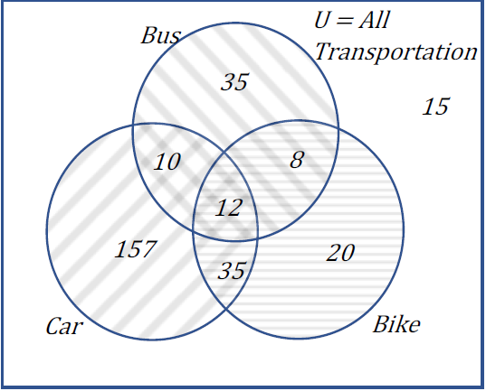
Example1.2.13.
One hundred fifty people were surveyed and asked if they believed in UFOs, ghosts, and Bigfoot. The following results were recorded.
43 believed in UFOs
44 believed in ghosts
25 believed in Bigfoot
10 believed in UFOs and ghosts
8 believed in ghosts and Bigfoot
5 believed in UFOs and Bigfoot
2 believed in all three
Draw and label a Venn diagram to determine how many people believed in at least two of these things.
Solution.
Starting with the intersection of all three circles, we work our way out. The number in the center is 2, since two people believe in UFO’s, ghosts and Bigfoot. Since 10 people believe in UFOs and Ghosts, and that includes the 2 that believe in all three, that leaves 8 that believe in only UFOs and Ghosts.
We work our way out, filling in all the regions. Once we have, we can add up all those regions, getting 91 people in the union of all three sets. This leaves 150 – 91 = 59 who believe in none.
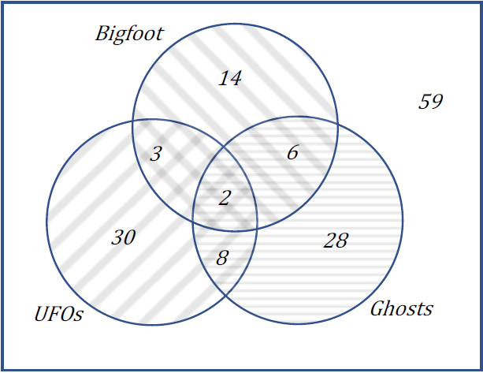
Then to answer the question of how many people believed in at least two (two or more), we add up the numbers in the intersections, 8 + 2 + 3 + 6 = 19 people.
Subsection1.2.8Qualified Propositions
A qualified proposition is a statement that asserts a relationship between two sets. The three relationships we will be looking at in this section are “some” (some elements are shared between the two sets), “none” (none of the elements are shared between the two sets), and “all” (all elements of one set are contained in the other set). These relationships are especially important in evaluating arguments.
Subsection1.2.9Overlapping Sets
Sets overlap if they have members in common. The Venn diagram examples we have looked at in this section are overlapping sets.
Example1.2.14.
The set of students living in SE Portland and the set of students taking MTH 105.
Qualified Proposition: “Some students who live in SE Portland take MTH 105.”
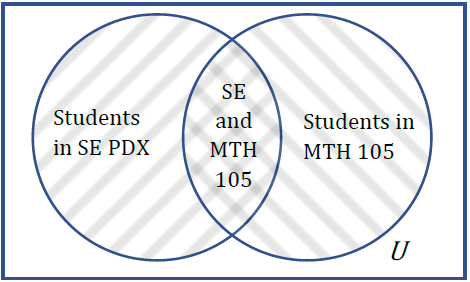
Subsection1.2.10Disjoint Sets
Sets are disjoint if they have no members in common.
Example1.2.15.
The set of Cats and the set of Dogs.
Qualified Proposition: “No cats are Dogs.”
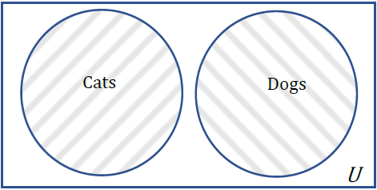
Subsection1.2.11Subsets
If a set is completely contained in another set, it is called a subset.
Example1.2.16.
The set of all Trees and the set of Maples Trees.
Qualified Proposition: “All Maples are Trees.”
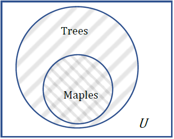
Exercises1.2.12Exercises
1.
List the elements of the set “The letters of the word Mississippi.”
2.
List the elements of the set “Months of the year.”
3.
Write a verbal description of the set {3, 6, 9}.
4.
Write a verbal description of the set {a, i, e, o, u}.
5.
Is {1, 3, 5} a subset of the set of odd numbers?
6.
Is {A, B, C} a subset of the set of letters of the alphabet?
Exercise Group.
Create a Venn diagram to illustrate each of the following:
7.
A survey was given asking whether people watch movies at home from Netflix, Redbox, or Disney+. Use the results to determine how many people use Redbox.
\(70\) only use Netflix, \(30\) only use Redbox
\(5\) only use Disney+, \(6\) use only Disney+ and Redbox
\(14\) use only Netflix and Redbox, \(20\) use only Disney+ and Netflix
\(7\) use all three, \(25\) use none of these
8.
A survey asked buyers whether color, size, or brand influenced their choice of cell phone. The results are below. How many people were influenced by brand?
\(5\) said only color, \(8\) said only size
\(16\) said only brand, \(20\) said only color and size
\(42\) said only color and brand, \(53\) said only size and brand
\(102\) said all three, \(20\) said none of these
9.
Use the given information to complete a Venn diagram, then determine: a) how many students have seen exactly one of these movies, and b) how many have seen only Star Wars Episode IX.
\(25\) have seen Inception (I), \(45\) have seen Star Wars Episode IX (SW)
\(19\) have seen Vanilla Sky (VS), \(18\) have seen I and SW
\(17\) have seen VS and SW, \(11\) have seen I and VS
\(9\) have seen all three
\(2\) have seen none of these
10.
A survey asked 100 people what alternative transportation modes they use. Use the data to complete a Venn diagram, then determine: a) what percentage of people only ride the bus, and b) how many people don’t use any alternate transportation.
40 use the bus, 25 ride a bicycle, and 33 walk
7 use the bus and ride a bicycle
15 ride a bicycle and walk, 20 use the bus and walk
5 use all three modes of alternate transportation
Exercise Group.
Given the qualified propositions:
Determine the two sets being described.
Determine if the sets described are Subsets, Overlapping Sets or Disjoint sets.
illustrate the situation using sets.
11.
All Terriers are dogs.
12.
Some Mammals Swim. (The second set is not clearly defined but is implied)
13.
No pigs can fly.
14.
All children are young.
15.
Some friends remember your birthday.
16.
No lies are truths.
17.
Suppose someone wants to conduct a study to learn how teenage employment rates differ among gender identities and honor roll status. For each teenager in the study, they will need to record the answers to these three questions:
How does the teenager identify their gender?
Is the teenager an honor student or not?
Is the teenager employed or not?
Explain what each of the regions in the following Venn Diagram represent.
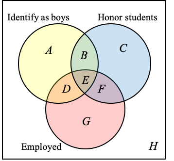
Region A:
Region B:
Region C:
Region D:
Region E:
Region F:
Region G:
Region H:
18.
Students were surveyed to see if they used smart phones, tablets, or both.
85 students said they used smart phones
50 students said they used tablets
10 students said they use both
5 students said they used neither
Draw a Venn Diagram to help you answer the following. Show your calculations.
How many students were surveyed?
19.
The Venn Diagram below shows the numbers of students in grade 5 at an elementary school who have enrolled for keyboard (K), guitar (G), and drum classes. Fill in the blanks
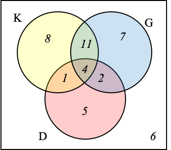
Students enrolled for keyboard class:
Students enrolled for keyboard class only:
Students didn’t enroll at all:
Students took all three classes:
Students enrolled for guitar and drum:
Students enrolled for guitar and drum only:
20.
A poll asked 100 coffee drinkers whether they like cream or sugar in their coffee. The information was organized in the following Venn Diagram.
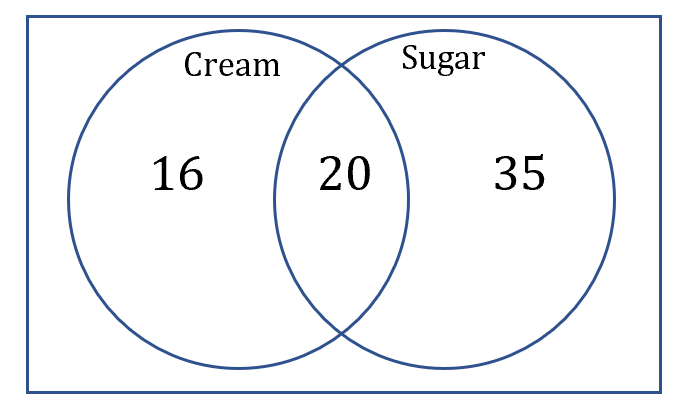
How many coffee drinkers like cream?
How many coffee drinkers like sugar?
How many coffee drinkers like sugar but not cream?
How many coffee drinkers like cream but not sugar?
How many coffee drinkers like cream and sugar?
How many coffee drinkers like cream or sugar?
How many coffee drinkers like neither cream nor sugar?
21.
110 dogs were asked “Why do you like to eat garbage?”
89 said “It tastes great!”
87 said “It’s more filling!”
68 said “It tastes great!” and “It’s more filling!”
Draw a Venn diagram to represent this information
How many said “It’s more filling!” but didn’t say “It tastes great!”?
How many said neither of those things?
How many said “It’s more filling!” or said “It tastes great”